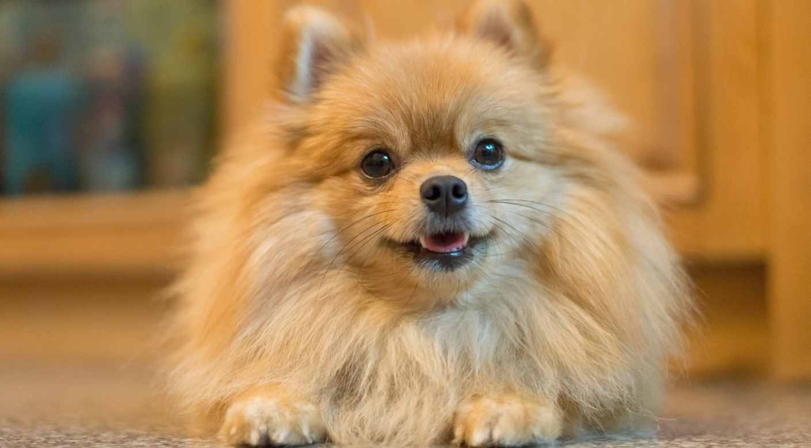
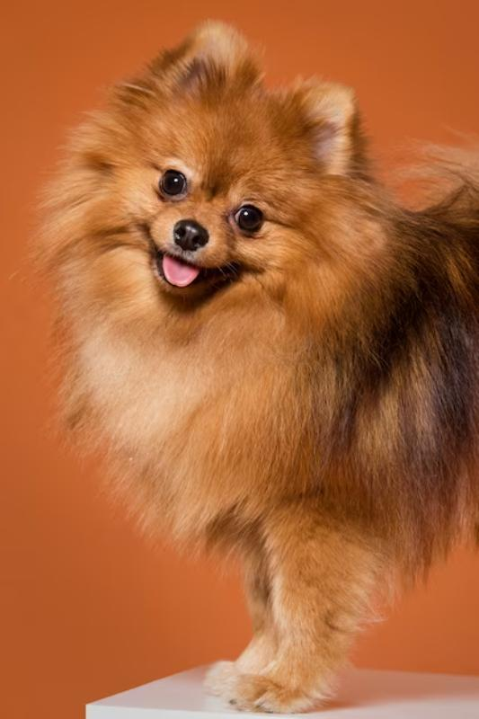

La vida de Zazu
Zazu es un perro de color naranja con un sueño extraordinario: convertirse en astronauta. Nacido en el año 2020, desde cachorro mostró un gran amor por la exploración y la aventura. Aunque sus amigos peludos preferían jugar en el parque, a Zazu le encantaba mirar las estrellas y soñar con viajar al espacio.
Zazu pasaba horas viendo documentales sobre el espacio y leyendo libros sobre astronautas famosos. Soñaba con flotar en gravedad cero y ver la Tierra desde arriba. Pero sabía que para lograrlo, tenía que trabajar duro y ser perseverante. Con el tiempo, Zazu comenzó a entrenar como un astronauta real. Corría, saltaba y hacía ejercicio para mantenerse en forma. También estudiaba matemáticas y ciencias para entender los conceptos detrás de la exploración espacial.
.png)
A medida que crecía, Zazu se convirtió en un perro muy viajero. Visitó muchos lugares en su país y en el extranjero, siempre con la esperanza de que cada viaje lo acercara un poco más a su sueño de alcanzar las estrellas. Hoy en día, Zazu sigue entrenando y soñando con ser astronauta. Aunque sabe que el camino hacia el espacio es difícil y requiere mucho esfuerzo, está decidido a no rendirse. Con su determinación y su amor por la aventura, Zazu espera algún día cumplir su sueño y convertirse en el primer perro astronauta.